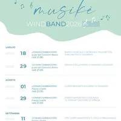

da ven 4 set a ven 11 set
MUSIKE' WINDBAND 2026
Dal 18 luglio al 29 agosto, la grande tradizione bandistica di Anbima FVG arriva a Lignano con 4 concerti imperdibili in Piazza San Giovanni Bosco
 Indicazioni
Indicazioni
- Costi e prenotazioni
- Costo non indicato · Prenotazione non indicata
- Programma
- Programma da verificare. Apri la fonte ufficiale per orari e possibili aggiornamenti.
- In caso di maltempo
- Nessuna indicazione specifica pubblicata.
- Note
- Acquisito automaticamente dalla fonte.
L’EVENTO
Descrizione completa
Il Festival Musikè Wind Band 2026 , organizzato da Anbima FVG , nasce nel 2018 come progetto di promozione del folklore musicale locale, la tradizione bandistica senior e giovanile, con particolare attenzione ai luoghi insoliti ma attrattivi per un turismo appassionato e curioso, che attrae un pubblico eterogeneo alla scoperta del Friuli.
Il Festival è nato con delle esibizioni nelle località montane (malghe e rifugi), ma nelle ultime 3 edizioni si è ampliato aggiungendo le località di Aquileia e Lignano Sabbiadoro , raggiungendo un pubblico di 250 spettatori ad evento.
Per l'edizione del 2026 proponiamo un calendario di 4 esibizioni:
I concerti saranno tutti alle ore 21.00; protagoniste saranno alcune delle Bande Musicali selezionate tra le 94 Associazioni Bandistiche associate ad Anbima FVG, fra cui la Banda Musicale Camillo Borgna e Majorettes Furlanutes di Madrisio APS.
Il repertorio spazierà dalle colonne sonore dei film più amati, ai brani della tradizione popolare e della musica classica più nota, offrendo un programma coinvolgente e adatto ad un pubblico ampio e trasversale.
IL PROGRAMMA
Programma e orari
Appuntamenti raccolti dalle fonti elencate. Dove manca un orario, non è ancora disponibile in questa scheda.
Programma pubblicato
- Dal 2026-07-18 al 2026-09-11
INFORMAZIONI UTILI
Prima di partire
- Controllare la fonte prima di partire.
ORGANIZZAZIONE